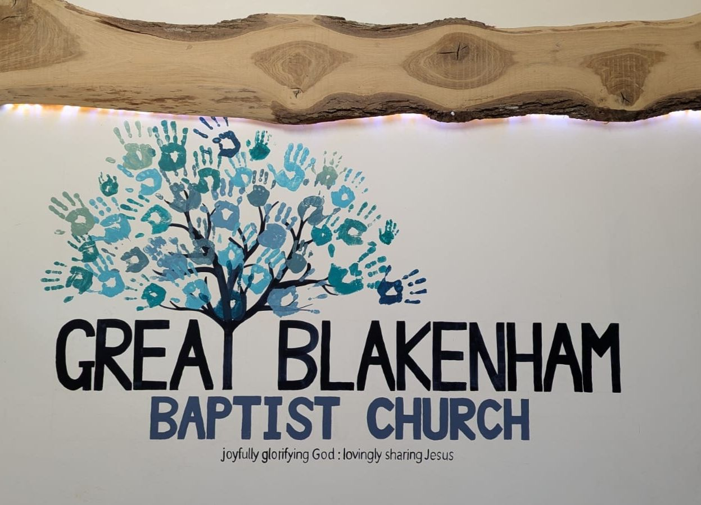

Morning Service 10:45 AM
Evening Service 6:30 PM (MEC)

Great Blakenham Baptist Church
A really warm welcome to GBBC. Whether you're new to the area, have lived here for many years, or are only here for a short time, we would love to meet you! Our Sunday services are at 10.45am every week. We also meet together for an evening service every Sunday at Mickfield Evangelical Church at 6.30pm. There are also many activities during the week that we welcome you to come along to. Please see below.
What's on when at GBBC
Tuesday
Prayer Meeting 2-3pm
(2-3pm)
We get together at the church each week for our prayer meetings on a Tuesday afternoon for an hour, 2:00pm - 3:00pm. Here we pray for each other, our church, and the world. Everyone welcome.

Wednesday
Coffee Morning 10am-noon
Our coffee Morning runs every Wednesday from 10am to 12 noon at the church hall. All
are welcome for coffee, chat and games.
A little time is given to a short Bible story with discussion and a prayer at the end.
Men's Games Night 7:30-9:30pm
Men's games night at the church hall on Wednesday 7:30 pm to 9:30pm.
Thursday
Growth Groups
We get together each week for our "Growth Group" meetings. We start informally with tea
and biscuits, and follow this with a Bible study and prayer. Anyone is welcome
to join us.
One group meets at 10am on Thursday in the church hall. Another group meets at 7:45pm in a
member's home.
Friday
Friday Club
This is held every Friday evening (term-time) from 6:30pm for one hour in the church's back hall for Primary School aged children.
Sunday Services
Our Sunday services are held on Chapel Lane in Great Blakenham at 10.45am every Sunday morning, where you can expect a warm welcome, Bible-based teaching, Sunday Club & Creche. The Gospel is central and our services include reading the Bible, praying, worshipping God and a sermon. Please join us for refreshments after the service.
About us
Leadership

Michael & Suzanne
Pastor
My name is Michael Lawrence, and I’m married to Suzanne. I was born in Burnley, Lancashire. I’ve lived in
Great Blakenham since January 2014. We have 4 children: Natalie, Tim, Aimee and Benjamin.
I was brought up in a Christian home with two brothers and two sisters. I knew all about Jesus from going
to church and children’s clubs. At the age of 7 I asked Jesus to be my Saviour. I have been involved with
WEC Camps since the age of 18, which are Christian Camps for 9-17 year olds with an emphasis on World
Mission. These have been some of the best holidays I have had, making lots of friends and eventually
serving with WEC International, in the Youth Office, full time for 10 years before moving to Suffolk.
My hobbies include following Burnley FC, playing games, Chess and watching sports.

Luke & Anna
Elder
Born and bred in Suffolk, we met at Mickfield Evangelical Church and got married in 2009. We were part of the church rejuvenation team that joined gbbc in 2012. Our daughter was 9 months old and she was the only child in the church at the time. It's wonderful to see how God has blessed the church with lots more children since then. We are passionate about sharing the good news of Jesus which we have had opportunity to do through our children's club every Friday evening. We also have a son, Eddie, a labrador called Ron and a cocker spaniel called Gertie!
What we believe
We believe the staggering, life-changing good news that Jesus Christ is the King of the universe, and though
we have failed in our lives, fallen from grace, and fought against him, he has entered our lives, brought
forgiveness for all wrongs, pardoned all our offences and made us part of his family.
To see the full statement of beliefs, see the link below.
LINK
Partnerships

MEC
MICKFIELD EVANGELICAL CHURCH
We are currently partnered with Mickfield Evangelical Church, which is where our
Sunday evening services are held. Please visit their website to find out more:
https://mickfieldec.co.uk/
EAGBC
THE ASSOCIATION OF GRACE BAPTIST CHURCHES (EAST ANGLIA)
Great Blakenham Baptist Church is affiliated with the Association of Grace Baptist Churches
(East Anglia) who seek to promote fellowship between churches for encouragement, evangelism
and the glory of God. More information is available on their website:
https://www.grace-ea.uk/
FIEC
FELLOWSHIP OF INDEPENDENT EVANGELICAL CHURCHES
Great Blakenham Baptist Church also has links with the Fellowship of Independent Evangelical Churches (FIEC)
who unite independent churches through the gospel to wok together to reach Britain:
https://fiec.org.uk/